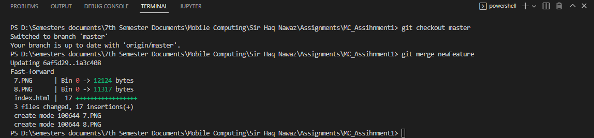
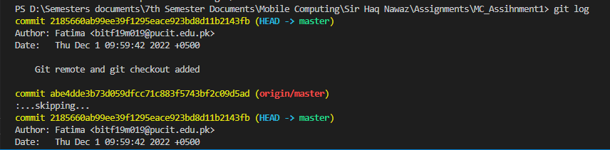

The first step is to initialize a new Git repo locally
in your project root.
git status
This command will show the status of the current repository including staged, unstaged, and untracked
files.
git add .
When we create, modify or delete a file, these changes will happen in our local and won't be included
in the next commit (unless we change the configurations).
We need to use the git add command to include the changes of a file(s) into our next commit.
git commit
This is maybe the most-used command of Git. Once we reach a certain point in development, we want to
save our changes (maybe after a specific task or issue). Git commit is like setting a checkpoint in
the development process which you can go back to later if needed.
We also need to write a short message to explain what we have developed or changed in the source
code.
git commit -m "commit message"
git branch
Branches are highly important in the git world. By using branches,
several developers are able to work in parallel on the same project simultaneously.
We can use the git branch command for creating, listing and deleting branches.
git Checkout
This is also one of the most used Git commands. To work in a branch,
first you need to switch to it. We use git checkout mostly for switching
from one branch to another. We can also use it for checking out files and commits.
git Checkout master
This is also one of the most used Git commands. To work in a branch,
first you need to switch to it. We use git checkout mostly for switching
from one branch to another. We can also use it for checking out files and commits.

git log
This command is used to list the version history for the current branch

git remote
This command is used to connect your local repository to the remote server.
git push
This command sends the committed changes of master branch to your remote repository.